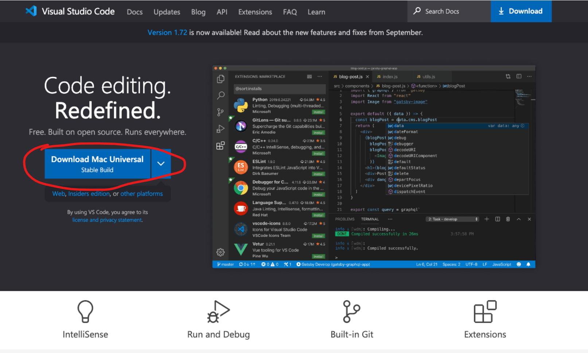
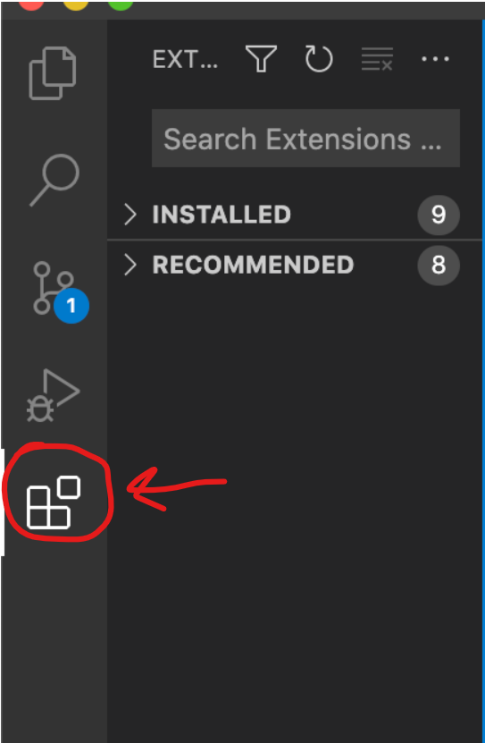
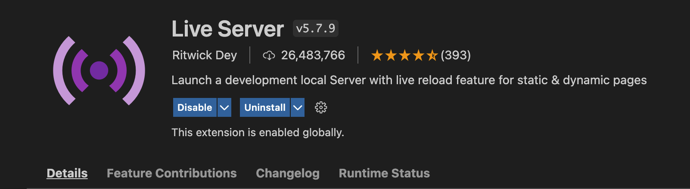

-
In order to write code in our class, we are going to download and
install a widely used editor called Visual Studio Code Editor.
Visit the following link and click the big blue "Download" button on the page:
https://code.visualstudio.com/

-
Once your software downloads, unzip and drag it to your
Applications folder, making it easier to find in your launchpad

-
Now that we have installed the main code editor we will be utilizing
throughout class, now we're going to install a few extensions that we
will need for viewing the live renders of our code

-
First, navigate to the left side panel in Visual Studio Code and click
the icon with the four boxes

In the Extensions tab, click in the search bar at the top. Then in the search bar, type "live preview". The extension Live Preview by Microsoft should be one of the first in the list. Click the Install button to install the extension

This extension will allow you to preview your HTML/CSS/Javascript code within Visual Studio.
In the Extensions tab, click in the search bar at the top. Then in the search bar, type "live server". The extension Live Server by Ritwick Dey should be one of the first in the list. Click the Install button to install the extension

This extension will allow you to preview your HTML/CSS/Javascript code within Visual Studio.
Now we have your main code editor ready to go!